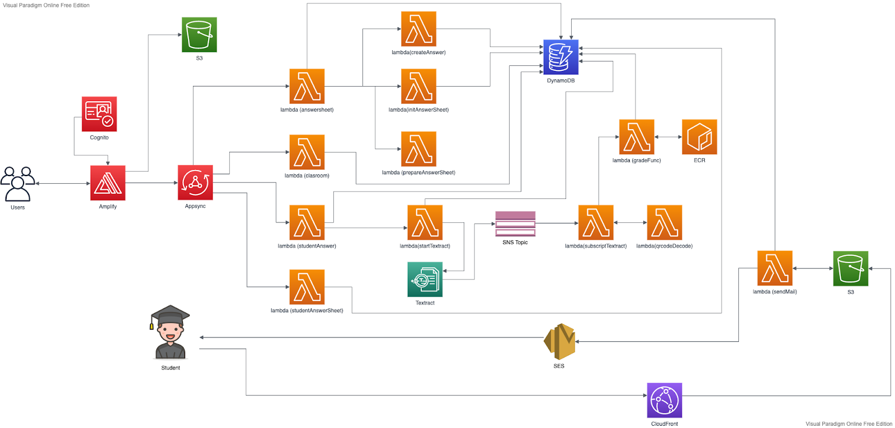

Grading Accelerator
Description
The report will describe more about the RQSW system, including four major parts: Literature review, system requirements, a proposed design, and implementations. The literature review evaluated existing literature on serverless architectures, transformer systems such as BERT, and Client-Side-Rendering and Server-side-Rendering. Besides, the system requirements included deeply listing the functional and non-functional requirements. In addition, the proposed design contains use cases, use case diagrams, database schema, sequence diagram, architecture design, and the system interface design. Furthermore, the about the part of the implementation, it is details of the testing procedure and the problem that occurred. The critical review and Suggestions for extensions to the project will be contained in this report.
Therefore, the RQSW is proposed which is the cloud-based platform that allows the teacher to create the answer book for the quiz or exam. The answer book included the model answer of the question, etc. The system will grade the student's work or sort the question based on created answer book when the teacher uploads the student answer sheets. The system will generate the report to the teacher for reference to the performance of the student works. The system is also allowed to publish the answer sheet to the student which will send the graded result to the student via email. The student can download the result by email to reduce the time of distribution.
System Architecture
Project Name
auto_grade
About
the RQSW is proposed which is the cloud-based platform that allows the teacher to create the answer book for the quiz or exam. The answer book included the model answer of the question, etc. The system will grade the student's work or sort the question based on created answer book when the teacher uploads the student answer sheets. The system will generate the report to the teacher for reference to the performance of the student works. The system is also allowed to publish the answer sheet to the student which will send the graded result to the student via email. The student can download the result by email to reduce the time of distribution.